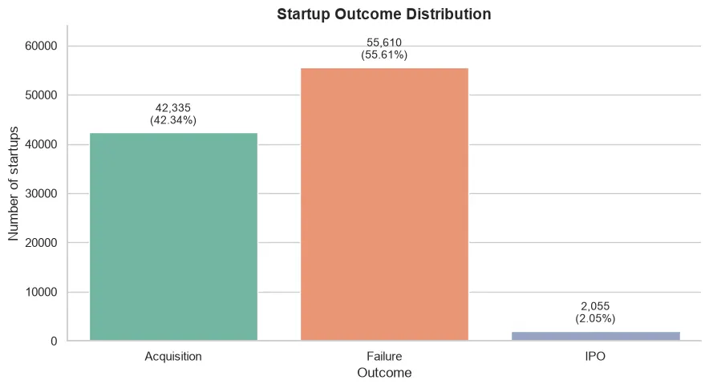
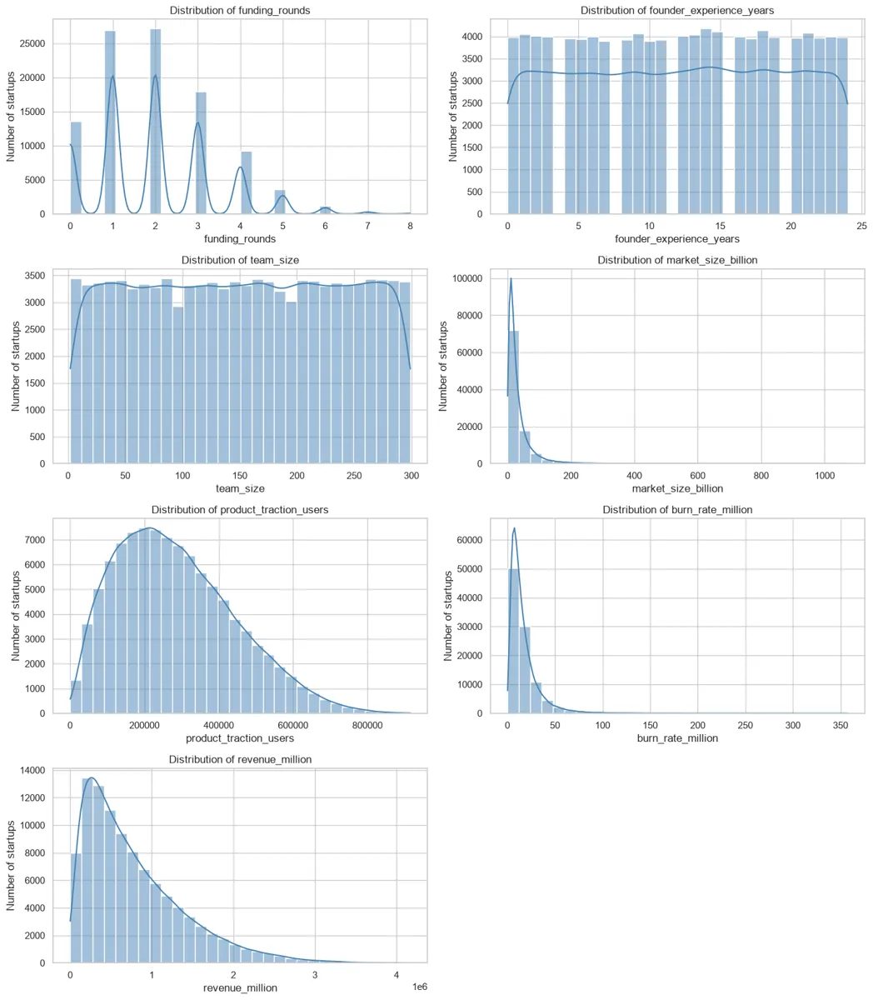
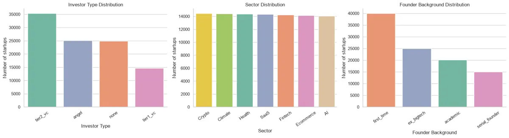
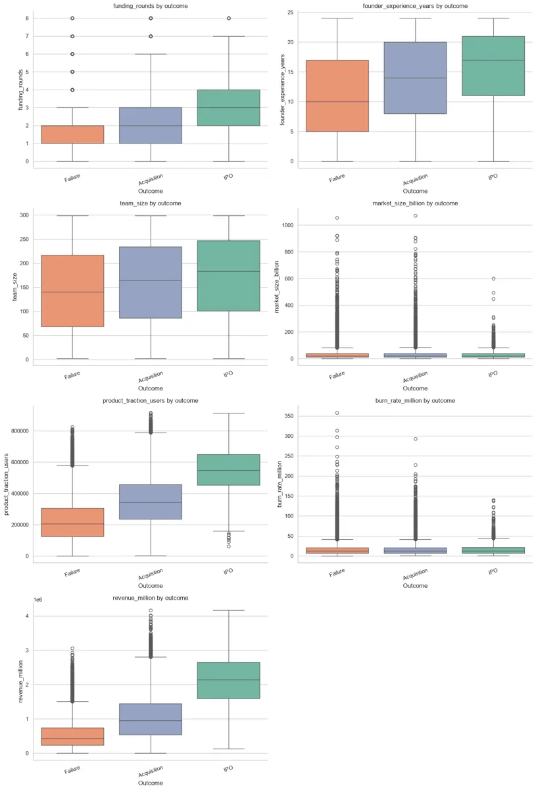
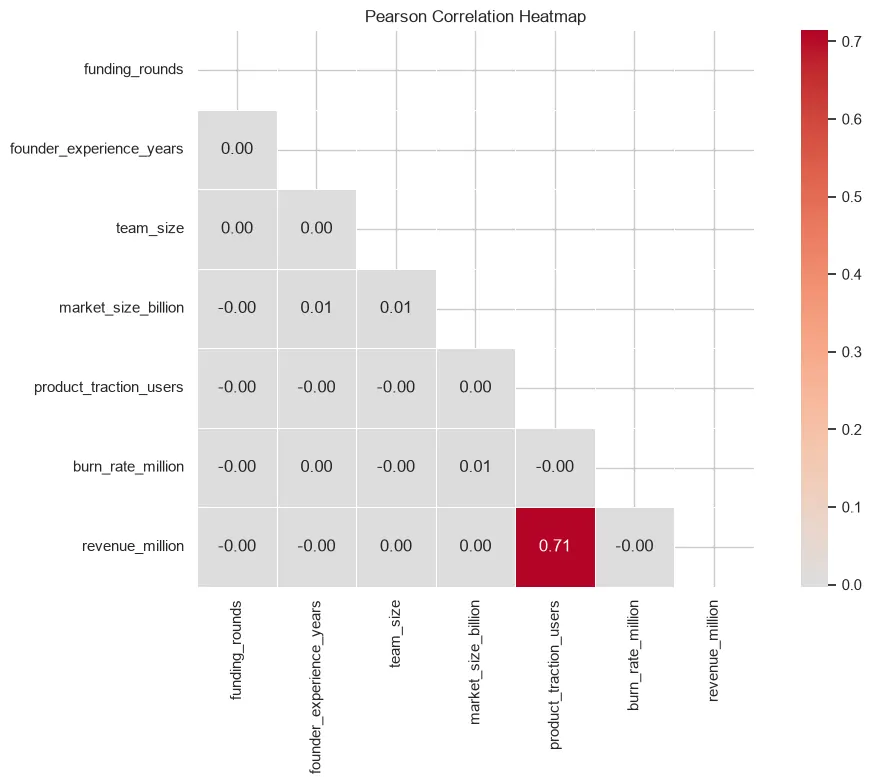
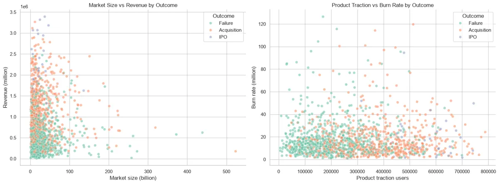
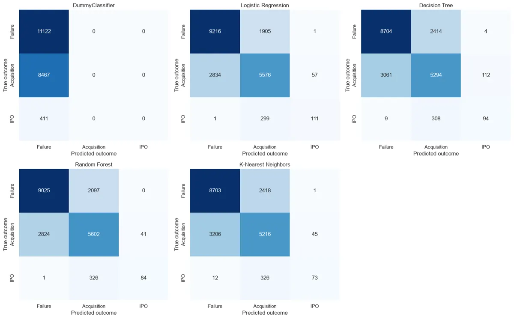
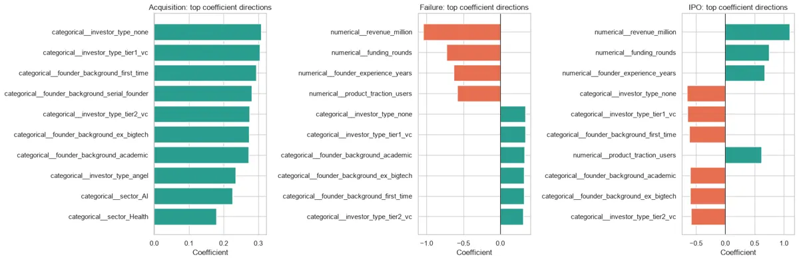
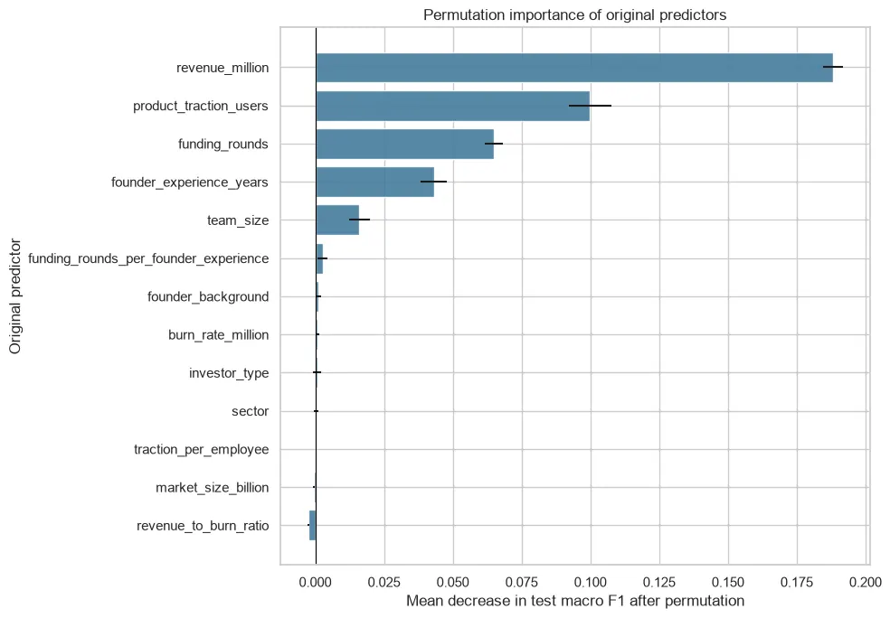

Unknown provenance
The dataset source, licence, collection process and representativeness could not be verified. It may be synthetic or otherwise not representative of real startups.
A study of recorded startup outcomes
Exploring what separates recorded failures, acquisitions and IPOs, then testing how well classification models distinguish between them.
The dataset contains startup characteristics and one outcome label. The task is to classify the recorded outcome into Failure, Acquisition or IPO.
Seven columns are numerical and four are categorical. The analysis checks data quality, studies the distribution of each feature and compares patterns across the three outcome groups.
The results describe this dataset only. They should not be treated as evidence about the full startup ecosystem.

Outlier flags were reviewed using the IQR rule. A statistical flag does not automatically mean a value is incorrect.
Exploratory analysis compared numerical distributions, category frequencies and outcome groups.
The analysis found noticeable differences in traction, revenue, funding rounds and team characteristics across outcome groups. Market size, by contrast, showed little separation in the group medians.
Statistical tests were then used to assess evidence of group differences and categorical associations. Effect sizes were included because a large sample can make small differences statistically significant.



IPO records had the highest median product traction and revenue, while failure records had lower medians on these measures. These are descriptive differences, not evidence that one feature causes an outcome.


Kruskal–Wallis tests compared numerical feature distributions across the three outcomes. Pairwise Mann–Whitney U tests used Holm correction. Chi-square tests examined categorical associations, with Cramér's V used to describe association strength.
Statistical significance was interpreted alongside effect sizes. The tests do not establish causality.
A classification workflow was built around a stratified train-test split and preprocessing pipelines.
The feature set includes the original predictors and three retained ratios. Numerical and categorical columns are processed separately. The preprocessing pipeline is fitted on training data.
Baseline classifiers were compared with a DummyClassifier. Class weighting and stratified cross-validation were also examined. Macro F1 was used to give each class equal weight in model comparison.
| Model | Accuracy | Macro F1 | IPO recall |
|---|---|---|---|
| Logistic Regression | 74.52% | 0.6215 | 27.01% |
| Random Forest (balanced) | 73.01% | 0.6120 | 28.95% |
| Random Forest | 73.56% | 0.5928 | 20.44% |
| Decision Tree | 70.46% | 0.5685 | 22.87% |
| K-Nearest Neighbors | 69.96% | 0.5553 | 17.76% |
| Dummy Classifier | 55.61% | 0.2382 | 0.00% |
The two Logistic Regression rows in the notebook have identical scores; they are shown once here to avoid implying they are different-performing models.
Logistic Regression was selected by the notebook's training-only cross-validation comparison. Its IPO recall remains low, so the result should not be presented as reliable IPO detection.



Revenue, product traction and funding rounds ranked among the most useful predictors for this fitted model. Permutation importance is model- and sample-dependent. It does not show that changing a feature would change a startup's outcome.
The dataset source, licence, collection process and representativeness could not be verified. It may be synthetic or otherwise not representative of real startups.
The dataset has no timestamps that establish when predictors were measured relative to the outcome. Some features could have been recorded after an acquisition or IPO.
IPO accounts for only 2.05% of records. The selected model's IPO recall is 27.01%, which means most IPO cases are not identified.
The held-out test partition was evaluated in Step 6, used for diagnostic comparisons in Step 7, and used for permutation importance in Step 8. It is not a completely untouched final estimate.
The work is best read as an exploratory analysis and model comparison on one dataset, not as a validated system for predicting the future success of real startups.